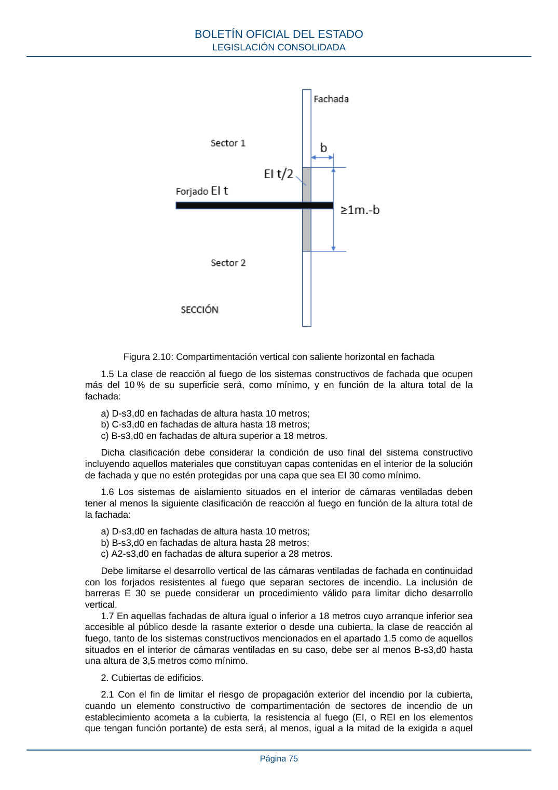

RSCIEI · edición 2025-04-10 · capa asociada
Documento RSCIEI-asociada · SHA-256 del PDF 85aa0af25d51e5b58d8975a4eefbf76d3f57a8933445cfe814ae9c4818a2e3e7
Página física 75 de 108.
Copia fiel del PDF fuente · Fuente oficial
Ficha de la disposición en la fuente oficial
Texto extraído y reorganizado: Basado en datos de la Agencia Estatal Boletín Oficial del Estado. PDF reproducido: Fuente de los datos: Agencia Estatal Boletín Oficial del Estado.
Formato: Texto de la página (Markdown)
Figura 2.10: Compartimentación vertical con saliente horizontal en fachada 1.5 La clase de reacción al fuego de los sistemas constructivos de fachada que ocupen más del 10 % de su superficie será, como mínimo, y en función de la altura total de la fachada: a) D-s3,d0 en fachadas de altura hasta 10 metros; b) C-s3,d0 en fachadas de altura hasta 18 metros; c) B-s3,d0 en fachadas de altura superior a 18 metros. Dicha clasificación debe considerar la condición de uso final del sistema constructivo incluyendo aquellos materiales que constituyan capas contenidas en el interior de la solución de fachada y que no estén protegidas por una capa que sea EI 30 como mínimo. 1.6 Los sistemas de aislamiento situados en el interior de cámaras ventiladas deben tener al menos la siguiente clasificación de reacción al fuego en función de la altura total de la fachada: a) D-s3,d0 en fachadas de altura hasta 10 metros; b) B-s3,d0 en fachadas de altura hasta 28 metros; c) A2-s3,d0 en fachadas de altura superior a 28 metros. Debe limitarse el desarrollo vertical de las cámaras ventiladas de fachada en continuidad con los forjados resistentes al fuego que separan sectores de incendio. La inclusión de barreras E 30 se puede considerar un procedimiento válido para limitar dicho desarrollo vertical. 1.7 En aquellas fachadas de altura igual o inferior a 18 metros cuyo arranque inferior sea accesible al público desde la rasante exterior o desde una cubierta, la clase de reacción al fuego, tanto de los sistemas constructivos mencionados en el apartado 1.5 como de aquellos situados en el interior de cámaras ventiladas en su caso, debe ser al menos B-s3,d0 hasta una altura de 3,5 metros como mínimo. 2. Cubiertas de edificios. 2.1 Con el fin de limitar el riesgo de propagación exterior del incendio por la cubierta, cuando un elemento constructivo de compartimentación de sectores de incendio de un establecimiento acometa a la cubierta, la resistencia al fuego (EI, o REI en los elementos que tengan función portante) de esta será, al menos, igual a la mitad de la exigida a aquel BOLETÍN OFICIAL DEL ESTADO LEGISLACIÓN CONSOLIDADA Página 75
